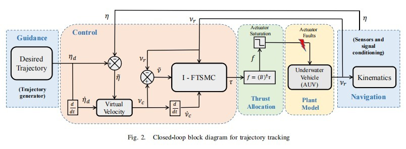
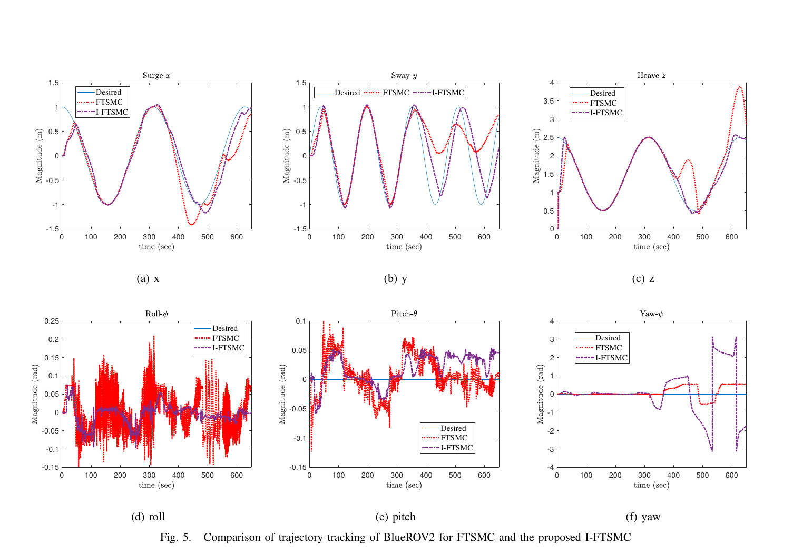

01
BlueROV2 Fault-Tolerant Control
Passive fault-tolerant control of an underwater robot surviving 4-thruster simultaneous failure.
System Architecture

5-node ROS2 architecture diagram - trajectory / controller / state estimator / thruster allocator / data logger700 x 400px
0.156m
Mean tracking error under fault (I-FTSMC)
4 thrusters
Simultaneous failure survived
PID
Diverged completely under same conditions
I-FTSMC with PI-Sig sliding surface held sub-0.3m tolerance where PID failed completely.View on GitHub ->

Trajectory tracking comparison - I-FTSMC vs FTSMC vs PID600 x 350px